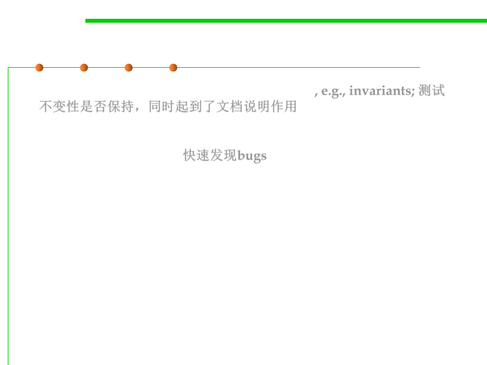
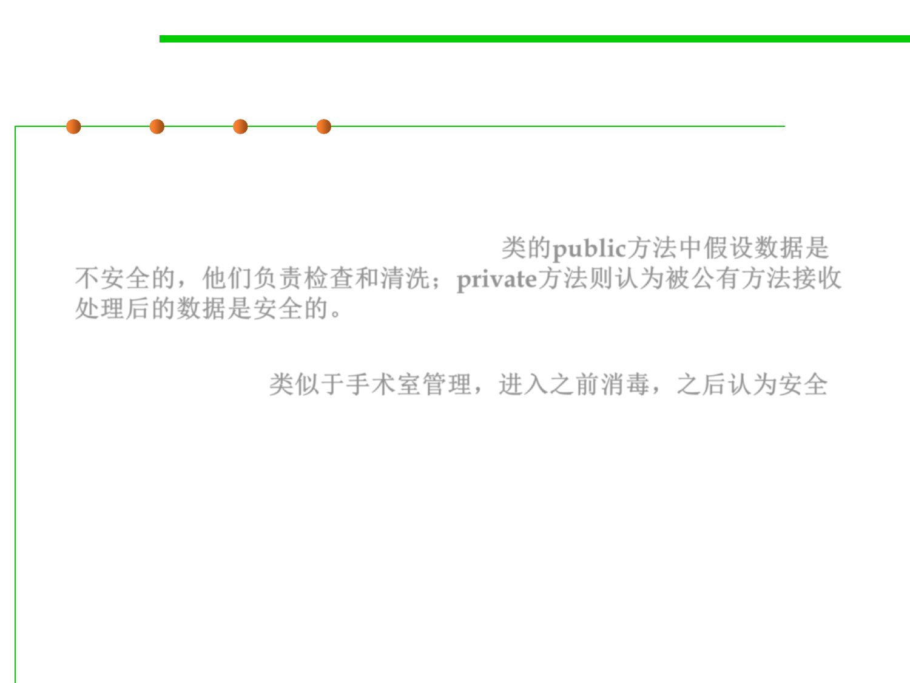
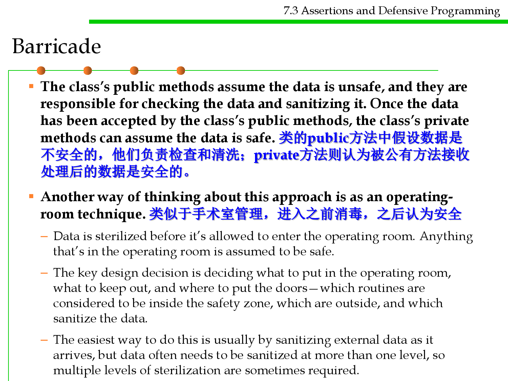
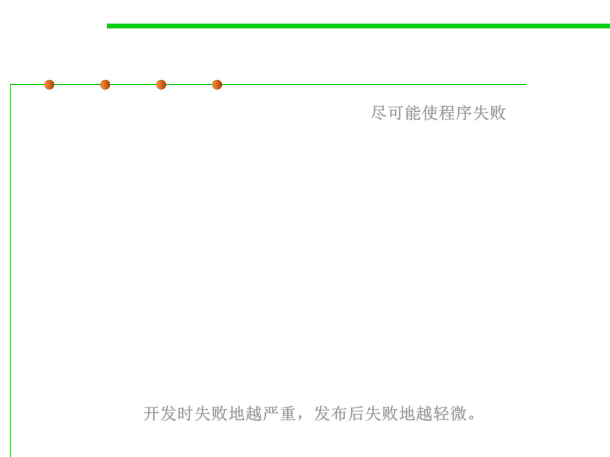
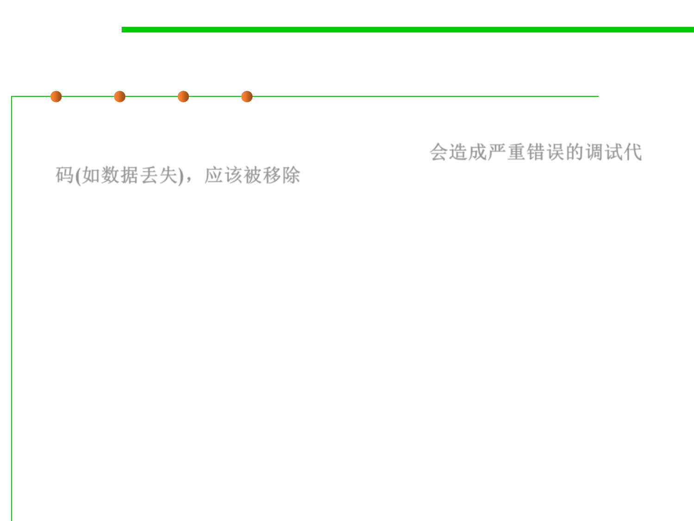
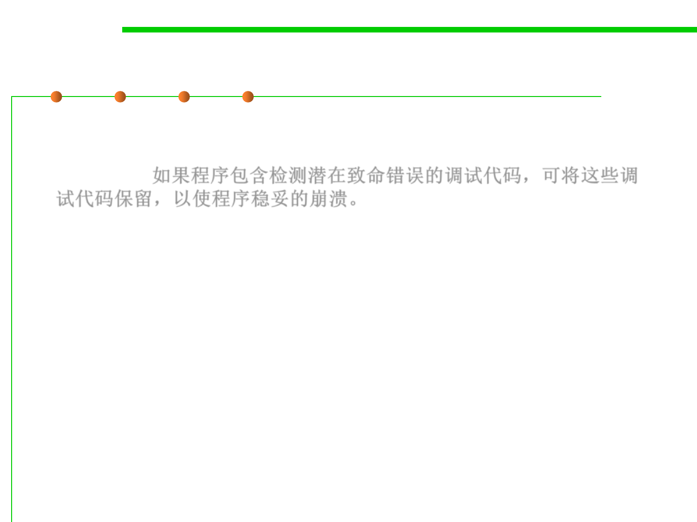
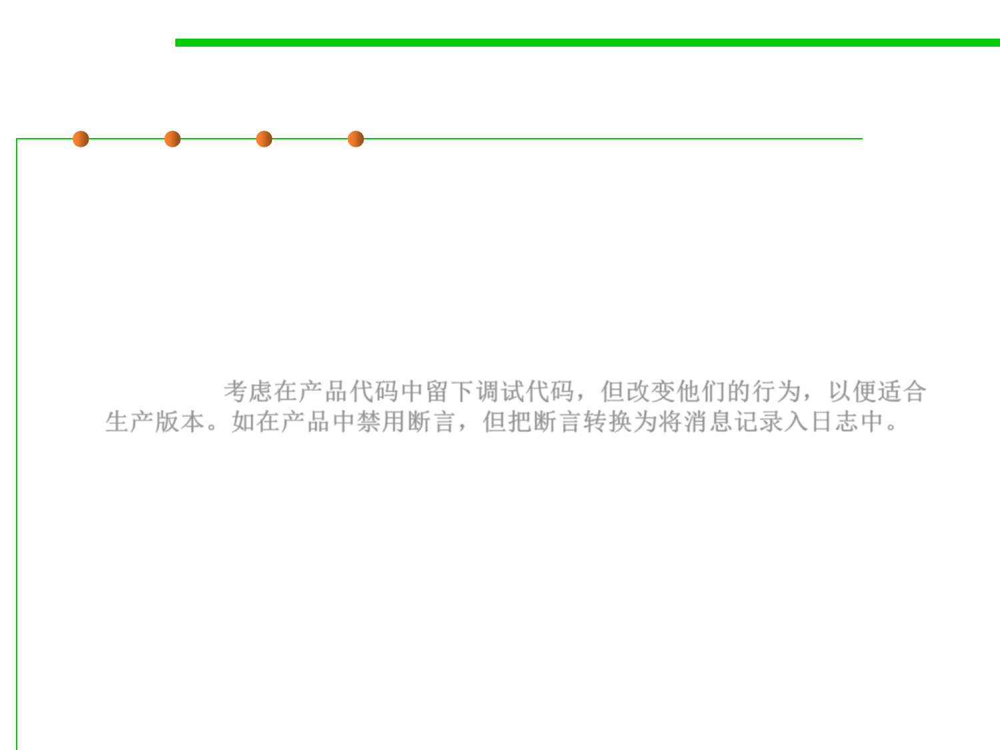

微信公众号[深容Pubmed文献检索] 1. 此处右键：选菜单【翻成中文（简体）】 2. 翻译后，此处右键：选菜单【打印...】成PDF格式
建议屏幕分辨率：1920X1080；如果屏幕太小，可以按Ctrl + 或 Ctrl -缩放网页。

Software Construction
Chapter 7: Software Construction for
Robustness
7.3 Assertions and Defensive
Programming
Xu Hanchuan
xhc@hit.edu.cn
May 6, 2019

Outline
7.3 Assertions and Defensive Programming
▪ Recall: Designing an ADT
▪ Assertions
– What to Assert and What not to?
– Guidelines for Using Assertions
▪ Defensive Programming
– Techniques for defensive programming
▪ Summary

Software Construction
1 Recall: Designing an ADT

7.3 Assertions and Defensive Programming
First Defense: Make Bugs Impossible
▪ The best defense against bugs is to make them impossible by
design.
– Static checking: eliminates many bugs by catching them at compile time.
– Dynamic checking: Java makes array overflow bugs impossible by catching
them dynamically. If you try to use an index outside the bounds of an array
or a List, then Java automatically produces an error.
– Immutability (immunity from change): An immutable type is a type whose
values can never change once they have been created.
– Defensive copying
– Immutable references: by final
7.3 Assertions and Defensive Programming
Second Defense: Localize Bugs
▪ If we can’t prevent bugs, we can try to localize them to a small part
of the program, so that we don’t have to look too hard to find the
cause of a bug. 如果bug不能被阻止，则限制在尽可能小的范围内
▪ When localized to a single method or small module, bugs may be
found simply by studying the program text.
▪ Fail fast: the earlier a problem is observed (the closer to its cause),
the easier it is to fix. 问题越早被发现(离起因越近)，越容易修复
7.3 Assertions and Defensive Programming
Second Defense: Localize Bugs
▪ Assertions: When the precondition is not satisfied, this code
terminates the program by throwing an AssertionError
exception. The effects of the caller’s bug are prevented from
propagating. 利用assertion检查前置条件的满足性
▪ Checking preconditions is an example of defensive programming.
Real programs are rarely bug-free. Defensive programming offers a
way to mitigate the effects of bugs even if you don’t know where
they are. 检查前置条件是防御性编程的一种方式

Software Construction
2 Assertions

Software Construction
(1) What and Why Assertions?

What is assertion?
7.3 Assertions and Defensive Programming
▪ An assertion is code that’s used during development that allows a
program to check itself as it runs, i.e., to test your assumptions about
your program logic (such as pre-conditions, post-conditions, and
invariants). 断言用于在运行时检查代码正确性
– When an assertion is true, that means everything is operating as expected.
– When it’s false, that means it has detected an unexpected error in the code.
▪ An example
public class AssertionTest {
public static void main(String[] args) {
int number = -5; // assumed number is not negative
// This assert also serve as documentation
assert (number >= 0) : "number is negative: " + number;
// do something
System.out.println("The number is " + number);
}
}
What is assertion?
7.3 Assertions and Defensive Programming
▪ Each assertion contains a boolean expression that you believe will
be true when the program executes.
▪ If it is not true, the JVM will throw an AssertionError.
▪ This error signals you that you have an invalid assumption that
needs to be fixed.
▪ Assertion is much better than using if-else statements, as it
serves as proper documentation on your assumptions, and it does
not carry performance liability in the production environment. 断
言要优于if-else语句：1.对程序中的假设起到适当的文档作用；2.在实
际运行时不会带来性能问题(在实现运行时断言可被禁止)。
What is assertion?
7.3 Assertions and Defensive Programming
▪ An assertion usually takes two arguments
– a boolean expression that describes the assumption supposed to be true
– a message to display if it isn’t.
▪ The Java language has a keyword assert. There are two forms:
– assert condition;
– assert condition : expression;
– Both statements evaluate the condition and throw an AssertionError if
the boolean expression evaluates to false.
– In the second statement, the expression is passed to the constructor of the
AssertionError object and turned into a message string. The description
is printed in an error message when the assertion fails, so it can be used to
provide additional details to the programmer about the cause of the
failure. 第二种方式允许提供错误信息提示


Assertion in Java
7.3 Assertions and Defensive Programming
▪ To assert that x is non-negative, you can simply use the statement
assert x >= 0;
▪ Or pass the actual value of x into the AssertionError object, so that it
gets displayed later:
assert x >= 0 : “x is ” + x;
▪ If x == -1, then this assertion fails with the error message
x is -1
▪ This information is often enough to get started in finding the bug.

Assertion Example
7.3 Assertions and Defensive Programming
public class AssertionSwitchTest {
public static void main(String[] args) {
// assumed either '+', '-', '*', '/' only
char operator = '%';
int operand1 = 5, operand2 = 6, result = 0;
switch (operator) {
case '+': result = operand1 + operand2; break;
case '-': result = operand1 - operand2; break;
case '*': result = operand1 * operand2; break;
case '/': result = operand1 / operand2; break;
default: assert false : "Unknown operator: " + operator;
}
System.out.println(operand1 + " " + operator + " "
+ operand2 + " = " + result);
}
}
Result:
Exception in thread "main" java.lang.AssertionError: Unknown operator: %
at ch7.assertion.AssertionSwitchTest.main(AssertionSwitchTest.java:13)

Why use assertions?
7.3 Assertions and Defensive Programming
▪ Document & test programmer‘s assumptions, e.g., invariants; 测试
不变性是否保持，同时起到了文档说明作用
▪ Verify programmer’s understanding
▪ Quickly uncover bugs 快速发现bugs
▪ Increase confidence that program is bug-free
▪ Asserts turn black box tests into white box tests

Why use assertions?
7.3 Assertions and Defensive Programming
▪ Assertion can be used for verifying:
– Internal Invariants: Assert that a value is within a certain constraint, e.g.,
assert x > 0.
– Class Invariants: Assert that an object's state is within a constraint. What
must be true about each instance of a class before or after the execution of
a method? Class invariants are typically verified via private boolean
method, e.g., an checkRep() method to check if a Circle object has a
positive radius.
– Control-Flow Invariants: Assert that a certain location will not be reached.
For example, the default clause of a switch-case statement.
– Pre-conditions of methods: What must be true when a method is
invoked? Typically expressed in terms of the method's arguments or the
states of its objects.
– Post-conditions of methods: What must be true after a method completes
successfully?

Software Construction
(2) What to Assert and What not to?

What to Assert？
7.3 Assertions and Defensive Programming
▪ Method argument requirements
▪ Method return value requirements
– This kind of assertion is sometimes called a self check .
public double sqrt(double x) {
assert x >= 0;
double r;
... // compute result r
assert Math.abs(r*r - x) < .0001;
return r;
}
▪ Covering all
– If a conditional statement or switch does not
cover all the possible cases, it is good practice
to use an assertion to block the illegal cases.
switch (vowel) {
case 'a':
case 'e':
case 'i':
case 'o':
case 'u': return "A";
default: assert false;
}

7.3 Assertions and Defensive Programming
What to Assert: more scenarios
▪ An input parameter’s value falls within its expected range (or an
output parameter’s value does) 判断输入值是否在指定范围
▪ A file or stream is open (or closed) when a method begins
executing (or when it ends executing) 文件或流是否打开/关闭
▪ A file or stream is at the beginning (or end) when a method begins
executing (or when it ends executing) 文件或流的当前指针是否在最开
始或者最后
▪ A file or stream is open for read-only, write-only, or both read and
write 文件或流的读写性控制
▪ The value of an input-only variable is not changed by a method 只
读输入参数是否被修改

7.3 Assertions and Defensive Programming
What to Assert: more scenarios
▪ A pointer is non-NULL
▪ An array or other container passed into a method can contain at least
X number of data elements
▪ A table has been initialized to contain real values
▪ A container is empty (or full) when a method begins executing (or
when it finishes)
▪ The results from a highly optimized, complicated method match the
results from a slower but clearly written routine 两个结果是否匹配

When to use assertions?
7.3 Assertions and Defensive Programming
▪ Normally, you don’t want users to see assertion messages in
production code; assertions are primarily for use during
development and maintenance.
▪ Assertions are normally compiled into the code at development
time and compiled out of the code for production. During
development, assertions flush out contradictory assumptions,
unexpected conditions, bad values passed to routines, and so on. 在
开发和调试阶段使用断言，帮助发现错误和异常。
▪ During production, they are compiled out of the code so that the
assertions don’t degrade system performance. 在发布时禁用断言，
避免影响性能。
▪ When should you write runtime assertions? As you write the code,
not after the fact. When you’re writing the code, you have the
invariants in mind. If you postpone writing assertions, you’re less
likely to do it, and you’re liable to omit some important invariants.
What Not to Assert?
7.3 Assertions and Defensive Programming
▪ Runtime assertions are not free. They can clutter the code, so they
must be used judiciously. 断言不是免费的，需要慎用
– Avoid trivial assertions, just as you would avoid uninformative
comments.
// don't do this:
x = y + 1;
assert x == y+1;
– This assertion doesn’t find bugs in your code.
– It finds bugs in the compiler or Java virtual machine, which are
components that you should trust until you have good reason to doubt
them. 对于可以信任的内容不要使用断言进行检测，如：编译器不会算错
y+1
– If an assertion is obvious from its local context, leave it out.
7.3 Assertions and Defensive Programming
Don’t Assert External Conditions
▪ Never use assertions to test conditions that are external to your
program. 不要用断言来测试外部的条件
– Such as the existence of files, the availability of the network, or the
correctness of input typed by a human user.
– Assertions test the internal state of your program to ensure that it is within
the bounds of its specification. 断言用于检测程序内部的内容
– When an assertion fails, it indicates that the program has run off the rails
in some sense, into a state in which it was not designed to function
properly. Assertion failures therefore indicate bugs. 当断言失败时，说明
程序的实现有问题，存在bugs
– External failures are not bugs, and there is no change you can make to
your program in advance that will prevent them from happening. 外部因
素导致的失败不是bugs，是程序无法预测和控制的
– External failures should be handled using exceptions instead. Avoid
trivial assertions, just as you would avoid uninformative comments. 外部
因素导致的失败应该采用exception机制处理
7.3 Assertions and Defensive Programming
Turn on/off Assert in different phases
▪ Many assertion mechanisms are designed so that assertions are
executed only during testing and debugging, and turned off when
the program is released to users. 在测试和调试阶段打开断言(快速发现和
定位bugs)，在程序发布后关闭断言(提升性能)
▪ Java’s assert statement behaves this way. (however, assertions are
off by default) Java默认关闭断言
▪ The advantage of this approach is that you can write very
expensive assertions that would otherwise seriously degrade the
performance of your program. 这样可以在测试阶段使用一些时空开销大的断
言技术快速发现错误。
– For example, a procedure that searches an array using binary search has a
requirement that the array be sorted. E.g., 二分搜索中检测数组是否排好序
– Asserting this requirement requires scanning through the entire array,
however, turning an operation that should run in logarithmic time into
one that takes linear time. You should be willing to pay this cost during
testing, since it makes debugging much easier, but not after the program is
released to users.
7.3 Assertions and Defensive Programming
Suggestion: always enable assertions
▪ However, disabling assertions in release has a serious
disadvantage.
▪ With assertions disabled, a program has far less error checking
when it needs it most.
▪ Novice programmers are usually much more concerned about the
performance impact of assertions than they should be.
▪ Most assertions are cheap, so they should not be disabled in the
official release. 如果断言对性能影响并不大，在发布版本中可以保留
7.3 Assertions and Defensive Programming
Enable & Disable assertions in Java
▪ Enable assertions
– Running the program with the -enableassertions or -ea option:
• java -enableassertions MyApp
– The option -ea... turns on assertions in all classes of the default package.
• java -ea:MyClass -ea:com.mycompany.mylib... MyApp
▪ Disable assertions
– Running the program with the -disableassertions or -da option:
• java -ea:... -da:MyClass MyApp
▪ By default, assertions are disabled.
▪ Enable assertions in Eclipse:
– In preferences, go to Java → Installed JREs . Click “Java SE 8”, click
“Edit…”, and in the “Default VM arguments” box enter: -ea

7.3 Assertions and Defensive Programming
assert vs. assertXXX()… in JUnit
▪ The Java assert statement is a different mechanism from the JUnit
methods assertTrue(), assertEquals(), etc.
▪ They all assert a predicate about your code, but are designed for
use in different contexts.
▪ The assert statement should be used in implementation code, for
defensive checks inside the implementation.
▪ JUnit assertXXX() methods should be used in JUnit tests, to check
the result of a test.
▪ The assert statements don’t run without -ea, but the JUnit
assertXXX() methods always run.

Software Construction
(3) Guidelines for Using Assertions

Assertion vs. Exception?
7.3 Assertions and Defensive Programming
▪ Assertions generally cover correctness issues of program.
▪ Exceptions generally cover robustness issues of program.
▪ Assertions are especially useful in large, complicated programs
and in high reliability programs.断言在大型复杂程序和高可靠性程
序中特别有用。
– They enable programmers to more quickly flush out mismatched interface
assumptions, errors that creep in when code is modified, and so on.
▪ Recall: checkRep() in Chapter 2 ADT for Rep Invariants.

Assertions vs. exceptions
7.3 Assertions and Defensive Programming
▪ Use error handling code (exception) for conditions you expect to
occur; 用exception来处理期望发生的情况(知道会发生，但是不知何时)
▪ Use assertions for conditions that should never occur 用断言来处理
绝对不该发生的情况
– Assertions check for conditions that should never occur. Error handling
code checks for off-nominal circumstances that might not occur very
often, but that have been anticipated by the programmer who wrote the
code and that need to be handled by the production code. Error-handling
typically checks for bad input data; assertions check for bugs in the
code. Exception处理错误的输入 数据，断言检查bugs
– If error handling code is used to address an anomalous condition, the
error handling will enable the program to respond to the error gracefully.
– If an assertion is fired for an anomalous condition, the corrective action is
not merely to handle an error gracefully—the corrective action is to
change the program’s source code, recompile, and release a new version of
the software.

7.3 Assertions and Defensive Programming
Avoid putting executable code in assertions
▪ Since assertions may be disabled, the correctness of your program
should never depend on whether or not the assertion expressions
are executed. 断言在程序发布后，有可能被关闭，所以不要在其中写业务代码
▪ In particular, asserted expressions should not have side-effects .
– For example, if you want to assert that an element removed from a list was
actually found in the list, don’t write it like this:
▪ If assertions are disabled, the entire expression is skipped, and x is
never removed from the list. Write it like this instead:
// don't do this:
assert list.remove(x);
// do this:
boolean found = list.remove(x);
assert found;

7.3 Assertions and Defensive Programming
Use Assertions for pre-/post- conditions
▪ Preconditions and postconditions are part of an approach to
program design and development known as “design by contract”.
– When preconditions and postconditions are used, each routine or class
forms a contract with the rest of the program.
– Preconditions are the properties that the client code of a routine or class
promises will be true before it calls the routine or instantiates the object.
Preconditions are the client code’s obligations to the code it calls.
– Postconditions are the properties that the routine or class promises will
be true when it concludes executing. Postconditions are the routine or
class’s obligations to the code that uses it.
▪ Assertions are a useful tool for documenting preconditions and
postconditions.
– Comments could be used to document preconditions and postconditions,
but assertions can check dynamically whether the preconditions and
postconditions are true.


7.3 Assertions and Defensive Programming
Use Assertions for pre-/post- conditions
▪ If the variables latitude, longitude, and elevation were coming
from an external source, invalid values should be checked and
handled by error handling code rather than assertions.
▪ If the variables are coming from a
trusted, internal source, however, float latitude;
and the routine’s design is based
float longitude;
float elevation;
on the assumption that these
values will be within their valid
ranges, then assertions are
appropriate.
//Preconditions
assert latitude>=-90 && latitude<=90;
assert longitude>=0 && longitude<360;
assert elevation>=-500 && elevation<=75000;
……
//Postconditions
assert Velocity>=0 && Velocity <= 600
//return value
return Velocity;

7.3 Assertions and Defensive Programming
Combine assert and error handling for robustness
▪ For highly robust code, assert, and then handle the error anyway
– For any given error condition a routine will generally use either an
assertion or error-handling code, but not both. Some experts argue that
only one kind is needed (Meyer 1997).
▪ But real-world programs and projects tend to be too messy to rely
solely on assertions. 真实世界的程序和项目往往太杂乱，不能完全依
靠断言。
– On a large, long-lasting system, different parts might be designed by
different designers over a period of 5-10 years or more. The designers will
be separated in time, across numerous versions, and separated
geographically. Their designs will focus on different technologies at
different points in the system’s development.
– Programmers will have worked to different coding standards at different
points in the system’s lifetime. On a large development team, some
programmers will inevitably be more conscientious than others and some
parts of the code will be reviewed more rigorously than other parts of the
code.

7.3 Assertions and Defensive Programming
Combine assert and error handling for robustness
▪ Both assertions and error handling code might be used to address
the same error. 有些情况下断言和错误处理代码都可以用来解决相同
的错误。
▪ E.g., in the source code for Microsoft Word, for example, conditions
that should always be true are asserted, but such errors are also
handled by error-handling code in case the assertion fails.
▪ For extremely large, complex, long-lived applications like Word,
assertions are valuable because they help to flush out as many
development-time errors as possible.
▪ But the application is so complex (million of lines of code) and has
gone through so many generations of modification that it isn’t
realistic to assume that every conceivable error will be detected
and corrected before the software ships, and so errors must be
handled in the production version of the system as well.

Software Construction
3 Defensive Programming

7.3 Assertions and Defensive Programming
What is defensive programming?
▪ Defensive programming is a form of defensive design intended to
ensure the continuing function of a piece of software under
unforeseen circumstances. 防御性编程是防御性设计的一种形式，旨
在确保在不可预见情况下软件持续提供功能的能力。
– Defensive programming practices are often used where high availability,
safety or security is needed.
▪ In defensive programming, the main idea is that if a method is
passed bad data, it won’t be hurt, even if the bad data is another
routine’s fault. 主要思想：如果某个方法被传入了不良数据，即使这
是另一个子程序的错误，方法本身也不会受到破坏。
– More generally, it’s the recognition that programs will have problems and
modifications, and that a smart programmer will develop code
accordingly.
7.3 Assertions and Defensive Programming
What is defensive programming?
▪ Defensive programming DOESN’T MEAN being defensive about
your programming—”It does so work!”
▪ The idea is based on defensive driving.
– In defensive driving, you adopt the mind-set that you’re never sure what
the other drivers are going to do.
– That way, you make sure
that if they do something
dangerous you won’t be
hurt.
– You take responsibility for
protecting yourself even
when it might be the other
driver’s fault.

7.3 Assertions and Defensive Programming
Benefits of defensive programming
▪ Defensive programming is an approach to improve software and
source code, in terms of:
– General quality – reducing the number of software bugs and problems.
– Making the source code comprehensible – the source code should be
readable and understandable so it is approved in a code audit.
– Making the software behave in a predictable manner despite unexpected
inputs or user actions.

Software Construction
Techniques for defensive
programming

7.3 Assertions and Defensive Programming
Techniques for defensive programming
▪ Protecting programs from invalid inputs
▪ Assertions see 7.3
▪ Exceptions see 7.2
▪ Specific error handling techniques see 7.2
▪ Barricade
▪ Debugging aids
▪ The best form of defensive coding is not inserting errors in the
first place.
▪ You can use defensive programming in combination with the other
techniques.

7.3 Assertions and Defensive Programming
(1) Protecting Programs From Invalid Inputs
▪ “Garbage in, Garbage out.”
– That expression is essentially software development’s version of caveat
emptor: let the user beware. 让用户提高注意力，如果输入错误的数据，则
程序不保证输出结果的正确性
▪ For production software, garbage in, garbage out isn’t good
enough.
▪ A good program never puts out garbage, regardless of what it takes
in.
– “garbage in, nothing out”
– “garbage in, error message out”
– “no garbage allowed in”
▪ “Garbage in, garbage out” is the mark of a sloppy, non-secure
program.

7.3 Assertions and Defensive Programming
Protecting Programs From Invalid Inputs
▪ Check the values of all data from external sources
– When getting data from a file, a user, the network, or some other external
interface, check to be sure that the data falls within the allowable range.
▪ Examples:
– Make sure that numeric values are within tolerances and that strings are
short enough to handle.
– If a string is intended to represent a restricted range of values (such as a
financial transaction ID or something similar), be sure that the string is
valid for its intended purpose; otherwise reject it.
– If you’re working on a secure application, be especially leery of data that
might attack your system: attempted buffer overflows, injected SQL
commands, injected html or XML code, integer overflows, and so on.

7.3 Assertions and Defensive Programming
Protecting Programs From Invalid Inputs
▪ Check the values of all routine input parameters
– Checking the values of routine input parameters is essentially the same as
checking data that comes from an external source, except that the data
comes from another routine instead of from an external interface.
▪ Decide how to handle bad inputs
– Once you’ve detected an invalid parameter, what do you do with it?
Depending on the situation, you might choose any of a dozen different
approaches, which are described in detail later in this chapter.

(2) Barricade 隔栏
7.3 Assertions and Defensive Programming
▪ Barricades are a damage-containment strategy. 隔栏是一种容损策略
– The reason is similar to that for having isolated compartments in the hull
of a ship and firewalls in a building. 起到防火墙的作用
▪ One way to barricade for defensive programming purposes is to
designate certain interfaces as boundaries to “safe” areas. Check
data crossing the boundaries of a safe area for validity and respond
sensibly if the data isn’t valid.
Defining some parts of the software
that work with dirty data and some
that work with clean can be an
effective way to relieve the majority
of the code of the responsibility for
checking for bad data.
 
Barricade
7.3 Assertions and Defensive Programming
▪ The class’s public methods assume the data is unsafe, and they are
responsible for checking the data and sanitizing it. Once the data
has been accepted by the class’s public methods, the class’s private
methods can assume the data is safe. 类的public方法中假设数据是
不安全的，他们负责检查和清洗；private方法则认为被公有方法接收
处理后的数据是安全的。
▪ Another way of thinking about this approach is as an operating-
room technique. 类似于手术室管理，进入之前消毒，之后认为安全
– Data is sterilized before it’s allowed to enter the operating room. Anything
that’s in the operating room is assumed to be safe.
– The key design decision is deciding what to put in the operating room,
what to keep out, and where to put the doors—which routines are
considered to be inside the safety zone, which are outside, and which
sanitize the data.
– The easiest way to do this is usually by sanitizing external data as it
arrives, but data often needs to be sanitized at more than one level, so
multiple levels of sterilization are sometimes required.

Barricade
7.3 Assertions and Defensive Programming
▪ Convert input data to the proper type at input time
– Input typically arrives in the form of a string or number.
– Sometimes the value will map onto a boolean type like “yes” or “no.”
– Sometimes the value will map onto an enumerated type like Color_Red,
Color_Green, and Color_Blue.
– Carrying data of questionable type for any length of time in a program
increases complexity and increases the chance that someone can crash
your program by inputting a color like “Yes.”
– Convert input data to the proper form as soon as possible after it’s input.
7.3 Assertions and Defensive Programming
Relationship between Barricades and Assertions
▪ The use of barricades makes the distinction between assertions
and error handling clean cut. 隔栏的实现中可以体现断言和异常的区别
– Routines that are outside the barricade should use error handling
because it isn’t safe to make any assumptions about the data.
– Routines inside the barricade should use assertions, because the data
passed to them is supposed to be sanitized before it’s passed across the
barricade. If one of the routines inside the barricade detects bad data,
that’s an error in the program rather than an error in the data.
▪ The use of barricades also illustrates the value of deciding at the
architectural level how to handle errors. Deciding which code is
inside and which is outside the barricade is an architecture-level
decision. 隔栏的使用也展示了在架构级别如何处理错误，决定哪些代码位于
内部，哪些位于隔栏之外是架构级决策。

7.3 Assertions and Defensive Programming
(3) Debugging Aids 调试助手/辅助调试的代码
▪ Debugging aids is a key aspect of defensive programming for
quickly detecting errors. (See 7.4 debugging)
▪ Don’t Automatically Apply Production Constraints to the
Development Version. 不要把产品版的限制强加于开发版之上
– A common programmer blind spot is the assumption that limitations of
the production software apply to the development version.
production version
has to run fast
has to be stingy with resources
节约使用资源
shouldn’t expose dangerous
operations to the user
development version
might be able to run slow
might be allowed to use resources
extravagantly 可奢侈地使用资源
can have extra operations that you can use
without a safety net
– Be willing to trade speed and resource usage during development in
exchange for built-in tools that can make development go more smoothly.
在开发过程中牺牲速度和对资源的使用，以换取可以使开发更顺利的内置
工具。

Debugging Aids
7.3 Assertions and Defensive Programming
▪ Introduce Debugging Aids Early.
– The earlier you introduce debugging aids, the more they’ll help.
– Typically, you won’t go to the effort of writing a debugging aid until after
you’ve been bitten by a problem several times.
– If you write the aid after the first time, however, or use one from a
previous project, it will help throughout the project.
7.3 Assertions and Defensive Programming
Debugging Aids: Use Offensive Programming
▪ Use Offensive Programming 使用进攻式编程
– Exceptional cases should be handled in a way that makes them obvious
during development and recoverable when production code is running.
(Howard and LeBlanc 2003). 对异常的处理：在开发阶段让异常尽可能明
显的展示出来，而在产品运行时让异常能够自我恢复。 --进攻式编程
– E.g., Suppose you have a case statement that you expect to handle only
five kinds of events.
• During development, the default case should be used to generate a warning that
says “Hey! There’s another case here! Fix the program!”
• During production, however, the default case should do something more
graceful, like writing a message to an error-log file.

7.3 Assertions and Defensive Programming
Debugging Aids: Use Offensive Programming
▪ Some ways you can program offensively: 尽可能使程序失败
– Make sure asserts abort the program. Don’t allow programmers to get into
the habit of just hitting the ENTER key to bypass a known problem. Make
the problem painful enough that it will be fixed.
– Completely fill any memory allocated so that you can detect memory
allocation errors.
– Completely fill any files or streams allocated to flush out any file-format
errors.
– Be sure the code in each case statement’s else clause fails hard (aborts the
program) or is otherwise impossible to overlook.
– Fill an object with junk data just before it’s deleted
▪ Sometimes the best defense is a good offense.
▪ Fail hard during development so that you can fail softer during
production. 开发时失败地越严重，发布后失败地越轻微。

7.3 Assertions and Defensive Programming
Debugging Aids: Plan to Remove Debugging Aids
▪ In commercial software, leaving all the debugging code in the
program will cause that the performance penalty in size and speed
can be prohibitive. Plan to avoid shuffling debugging code in and
out of a program. 做好计划，避免调试用代码和程序代码纠缠不清。
– Use version control and build tools like make
• Version-control and build tools(like git, svn, ant, make…) can build different
versions of a program from the same source files.
• In development mode, you can set the build tool to include all the debug code.
• In production mode, you can set it to exclude any debug code you don’t want in
the commercial version.
– Use a built-in preprocessor
• If your programming environment has a preprocessor—as C++ does, for
example—you can include or exclude debug code at the flick of a compiler
switch.
• You can use the preprocessor directly or by writing a macro that works with
preprocessor definitions.

7.3 Assertions and Defensive Programming
Debugging Aids: Plan to Remove Debugging Aids
▪ Write your own preprocessor
▪ If a language doesn’t include a preprocessor, it’s fairly easy to write
one for including and excluding debug code.
– Establish a convention for designating debug code and write your
precompiler to follow that convention.
– For example, in Java you could write a precompiler to respond to the
keywords //#BEGIN DEBUG and //#END DEBUG.
– Write a script to call the preprocessor, and then compile the processed
code.
– You’ll save time in the long run, and you won’t mistakenly compile the
unpreprocessed code.

7.3 Assertions and Defensive Programming
Debugging Aids: Plan to Remove Debugging Aids
▪ Use debugging stubs使用调试存根
– In many instances, you can call a routine to do debugging checks.
– During development, the routine might perform several operations before
control returns to the caller.
– For production code, you can replace the complicated routine with a stub
routine that merely returns control immediately to the caller or performs
only a couple of quick operations before returning control.
– This approach incurs only a small performance penalty, and it’s a quicker
solution than writing your own preprocessor. Keep both the development
and production versions of the routines so that you can switch back and
forth during future development and production.
// check object passed in during development
void checkObject(someClass XXX){
…//check whether null
// check object passed in during production
…//check data format
void checkObject(someClass XXX){
…
// no code; just return to caller
…//check data integrality }
}

7.3 Assertions and Defensive Programming
Determining How Much Defensive Programming to Leave in
Production Code?
▪ One of the paradoxes of defensive programming is that during
development, you’d like an error to be noticeable.
▪ But during production, you’d rather have the error be as
unobtrusive as possible, to have the program recover or fail
gracefully. 开发中，希望错误尽可能明显；发布后，希望错误尽可能
不明显。
▪ Some guidelines for deciding which defensive programming tools
to leave in your production code and which to leave out:
7.3 Assertions and Defensive Programming
(1) Leave in code that checks for important errors
▪ Decide which areas of the program can afford to have undetected
errors and which areas cannot. 确定程序的哪些部分能够承受未检测
出错误而造成的后果，哪些不能。
▪ E.g., in a spreadsheet program, undetected errors in the screen-
update area of the program may be affordable, but undetected
errors in the calculation engine is unaffordable.

7.3 Assertions and Defensive Programming
(2) Remove code that checks for trivial errors
▪ If an error has truly trivial consequences, remove code that checks
for it. 如果错误的后果微不足道，可以删除检测代码。
▪ In the previous example, you might remove the code that checks
the spreadsheet screen update.
▪ “Remove” doesn’t mean physically remove the code. It means use
version control, precompiler switches, or some other technique to
compile the program without that particular code. 并不是物理删除
，要利用版本控制或者make工具
▪ If space isn’t a problem, you could leave in the error-checking code
but have it log messages to an error-log file unobtrusively.

7.3 Assertions and Defensive Programming
(3) Remove code that results in hard crashes
▪ If your program contains debugging code that could cause a loss of
data, take it out of the production version. 会造成严重错误的调试代
码(如数据丢失)，应该被移除
▪ During development, when your program detects an error, you’d
like the error to be as noticeable as possible so that you can fix it.
– Often, the best way to accomplish such a goal is to have the program print
a debugging message and crash when it detects an error.
– This is useful even for minor errors.
▪ During production, your users need a chance to save their work
before the program crashes and are probably willing to tolerate a
few anomalies in exchange for keeping the program going long
enough for them to do that.
– Users don’t appreciate anything that results in the loss of their work,
regardless of how much it helps debugging and ultimately improves the
quality of the program.

7.3 Assertions and Defensive Programming
(4) Leave in code that helps crash gracefully
▪ If your program contains debugging code that detects potentially
fatal errors, leave the code in that allows the program to crash
gracefully. 如果程序包含检测潜在致命错误的调试代码，可将这些调
试代码保留，以使程序稳妥的崩溃。
▪ E.g.，in the Mars Pathfinder火星探路者, for example, engineers left
some of the debug code in by design. An error occurred after the
Pathfinder had landed.
▪ By using the debug aids that had been left in, engineers at JPL were
able to diagnose the problem and upload revised code to the
Pathfinder, and the Pathfinder completed its mission perfectly
(March 1999).

7.3 Assertions and Defensive Programming
(5)(6) Log errors and friendly error messages
▪ 5. Log errors for your technical support personnel
– Consider leaving debugging aids in the production code but changing
their behavior so that it’s appropriate for the production version.
– If you’ve loaded your code with assertions that halt the program during
development, you might considering changing the assertion routine to log
messages to a file during production rather than eliminating them
altogether.考虑在产品代码中留下调试代码，但改变他们的行为，以便适合
生产版本。如在产品中禁用断言，但把断言转换为将消息记录入日志中。
▪ 6. See that the error messages you leave in are friendly
– If you leave internal error messages in the program, verify that they’re in
language that’s friendly to the user.
– E.g., “You’ve got a bad pointer allocation!” ？？？
– A common and effective approach is to notify the user of an “internal
error” and list an email address or phone number the user can use to
report it.
7.3 Assertions and Defensive Programming
Being Defensive about Defensive Programming
▪ Too much defensive programming creates problems of its own.
– Overly defensive programming however introduces unnecessary code for
errors impossible to even happen, adds complexity to the software, thus
wasting runtime and maintenance costs. 增加了复杂性、运行时间和维护成本
– Code installed for defensive programming is not immune to defects, and
you’re just as likely to find a defect in defensive-programming code as in
any other code. 防御性代码本身也有可能存在缺陷
– There is also the risk that the code traps or prevents too many exceptions,
potentially resulting in unnoticed, incorrect results.
▪ Think about where you need to be defensive, and set your
defensive-programming priorities accordingly. 设计好何处进行防御
，制定相应的防御策略

7.3 Assertions and Defensive Programming
CHECKLIST: Defensive Programming
▪ General
– Does the routine protect itself from bad input data?
– Have you used assertions to document assumptions, including
preconditions and postconditions?
– Have assertions been used only to document conditions that should never
occur?
– Does the architecture or high-level design specify a specific set of error
handling techniques?
– Does the architecture or high-level design specify whether error handling
should favor robustness or correctness?
– Have barricades been created to contain the damaging effect of errors and
reduce the amount of code that has to be concerned about error
processing?
– 摘自《代码大全》

7.3 Assertions and Defensive Programming
CHECKLIST: Defensive Programming
▪ General
– Have debugging aids been used in the code?
– Has information hiding been used to contain the effects of changes so that
they won’t affect code outside the routine or class that’s changed?
– Have debugging aids been installed in such a way that they can be
activated or deactivated without a great deal of fuss?
– Is the amount of defensive programming code appropriate—neither too
much nor too little?
– Have you used offensive programming techniques to make errors difficult
to overlook during development?

7.3 Assertions and Defensive Programming
CHECKLIST: Defensive Programming
▪ Exceptions
– Has your project defined a standardized approach to exception handling?
– Have you considered alternatives to using an exception?
– Is the error handled locally rather than throwing a non-local exception if
possible?
– Does the code avoid throwing exceptions in constructors and destructors?
– Are all exceptions at the appropriate levels of abstraction for the routines
that throw them?
– Does each exception include all relevant exception background
information?
– Is the code free of empty catch blocks? (Or if an empty catch block truly is
appropriate, is it documented?)

7.3 Assertions and Defensive Programming
CHECKLIST: Defensive Programming
▪ Security Issues
– Does the code that checks for bad input data check for attempted buffer
overflows, SQL injection, html injection, integer overflows, and other
malicious inputs?
– Are all error-return codes checked?
– Are all exceptions caught?
– Do error messages avoid providing information that would help an
attacker break into the system?

Software Construction
The end
May 6, 2019